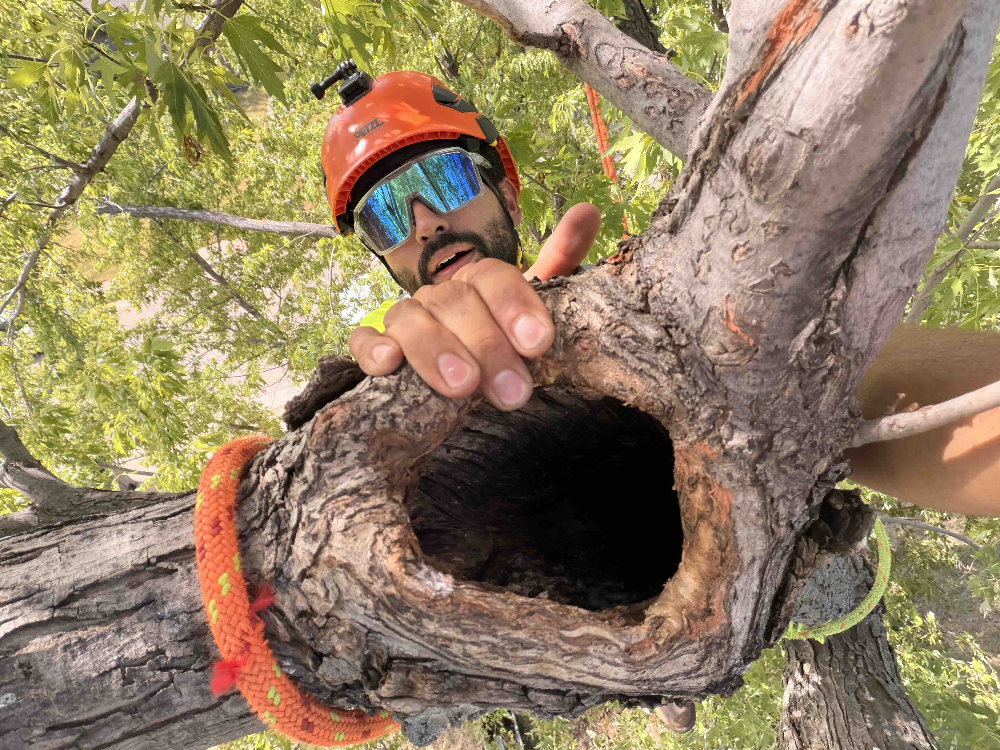
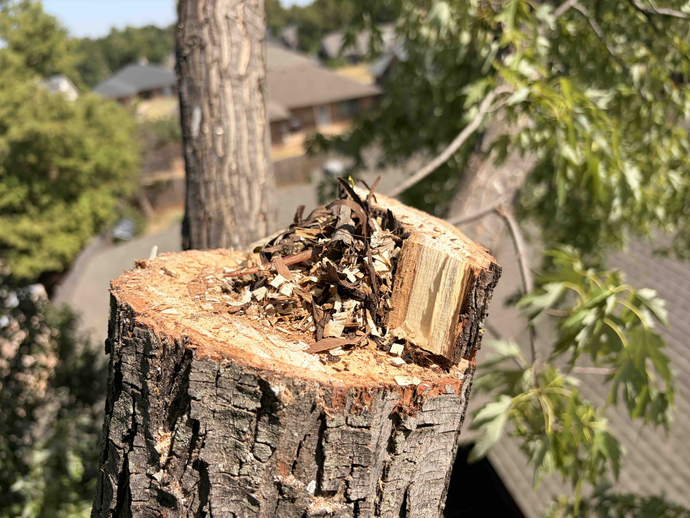

A ground inspection can give an arborist a plan. The tree gives him the rest of the information.
This mature tree in Edmond had weathered more than one episode of storm damage. Broken limbs and older wounds were visible within the crown, but the tree still carried a substantial amount of healthy, functioning structure.
The homeowner wanted the storm damage corrected. The timing also made practical sense: other woody debris was already being removed from the property, so the pruning debris could be consolidated into the same haul-off.
That was a good logistical reason to perform the work. It was not a good reason to prune more tree than necessary.
Before climbing, I gave myself a simple working hypothesis: address the damaged material, inspect questionable attachments, retain healthy structure wherever reasonable, and keep the overall pruning dose conservative.
Then I went up to see whether the tree agreed.
The storm had already changed the crown
Storm-damage pruning begins from a different starting point than routine pruning.
A storm has already removed branches, created wounds, and changed the distribution of the crown. The result may look irregular, especially from the ground.
That irregularity can tempt a person to continue cutting until the tree looks visually balanced again.
But a mature tree is not a geometric object.
The objective was to correct the damage, not to make healthy portions of the tree match it.
Sound branches and healthy foliage still have value. If one part of the crown has already been lost, removing healthy material elsewhere simply to create symmetry can turn a limited injury into much broader canopy loss.
So every additional cut needed to answer a simple question:
What does removing this actually accomplish?
A hypothesis, not a prescription
From the ground, my framework was straightforward: correct torn and broken material, inspect damaged attachments, prefer smaller interventions where they accomplish the objective, and leave useful structure alone when there is no compelling reason to remove it.
But mature trees contain history that cannot always be read from below.
Branch unions overlap. Foliage hides wounds. Cavities can be almost invisible from one direction and obvious from another.
Once I reached one of the damaged portions of the crown, the difference between planning and seeing became very clear.


From within the crown, an old cavity associated with the damaged structure became much easier to understand. It was important information, but not a verdict on every branch around it.
What looked simple from below was more complicated up close
The attachment contained a substantial old cavity that was not fully legible from the ground.
Finding a cavity matters, but the existence of decay or missing internal wood does not automatically dictate removal of an entire limb or tree. Mature trees often continue living with old injuries, cavities, callus growth, and other structural imperfections.
What mattered here was context.
I could now inspect the relationship between the cavity, the affected portion, and the live structure around it. I could view the union from several directions instead of trying to infer everything from the lawn.
The original hypothesis still helped.
But now the tree was providing better evidence.

Let the tree change the plan
This is where principles become useful, or dangerous.
A good principle should improve judgment. It should not replace it.
Remove what needs to come off. Preserve what can responsibly remain.
As I moved through the crown, some planned cuts became unnecessary. Other defects deserved closer attention than they had from the ground.
The presence of one problem did not become permission to keep expanding the pruning around it.
After each meaningful intervention, I reassessed the remaining tree.
The question became less: What else could I prune while I am here?
And more: What problem would the next cut solve?
When there was no convincing answer, the branch stayed.